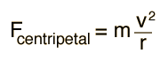
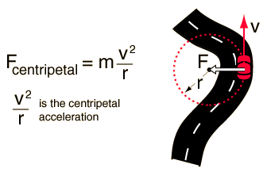

Centripetal Force
Any motion in a curved path represents accelerated motion, and requires a force directed toward the center of curvature of the path. This force is called the centripetal force which means "center seeking" force. The force has the magnitude

Swinging a mass on a string requires string tension, and the mass will travel off in a tangential straight line if the string breaks.
The centripetal acceleration
can be derived for the case of
circular motion since the
curved path at any point can
be extended to a circle.
|  |
Note that the centripetal force is proportional to the square of the velocity, implying that a doubling of speed will require four times the centripetal force to keep the motion in a circle. If the centripetal force must be provided by friction alone on a curve, an increase in speed could lead to an unexpected skid if friction is insufficient.
|
|
Index
Example with mass on string |